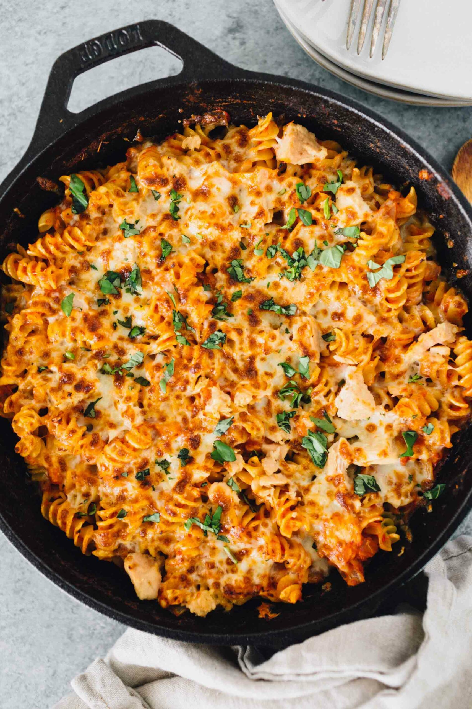

Chicken Thighs

Description:
Add lots of diced veggies to this dish and make it a one pot meal.
Ingredients
- canned tuna
- 1 large onion, diced
- garlic, 3-5 cloves
- capers and/or olives
- parsley, minced
- tomato paste, 1 can
- tomato sauce/diced tomato, 2 small or 1 large can
- cheese: parmesan and/or mozarella
- optional veggies: diced zucchini, eggplant, peppers, spinach, kale
- optional: cream, lemon, chili
- salt
Steps
- Preheat oven to 375F.
- Butter a large pyrex baking dish, set aside.
- Fill a large pot with water, bring to a boil. Salt liberally, cook noodles until slightly underdone. Drain noodles, set aside.
- While you are waiting for the water to boil, sweat onions in a large saucepan.
- When onions are translucent, add minced garlic.
- Add optional veggies, stir until softened.
- Add tomato paste, cook until darkened. Add canned tomatoes.
- Drain tuna, add to onions and garlic.
- Season, add (optional) lemon and zest to taste, black pepper, (optional) chili peppers. This would be the time to add cream, if desired.
- Add noodles, stir, pour into pyrex.
- Add cheeses on top, bake until melted and bubbly. (20-30 minutes. Cover if the cheese is browning too much.)
- Let sit for ten minutes before serving. Sprinkle parsley.
Notes
- Variations: salmon with cream sauce (omit tomatoes), tuna with broccoli raab and cream sauce (omit tomatoes), smoked salmon